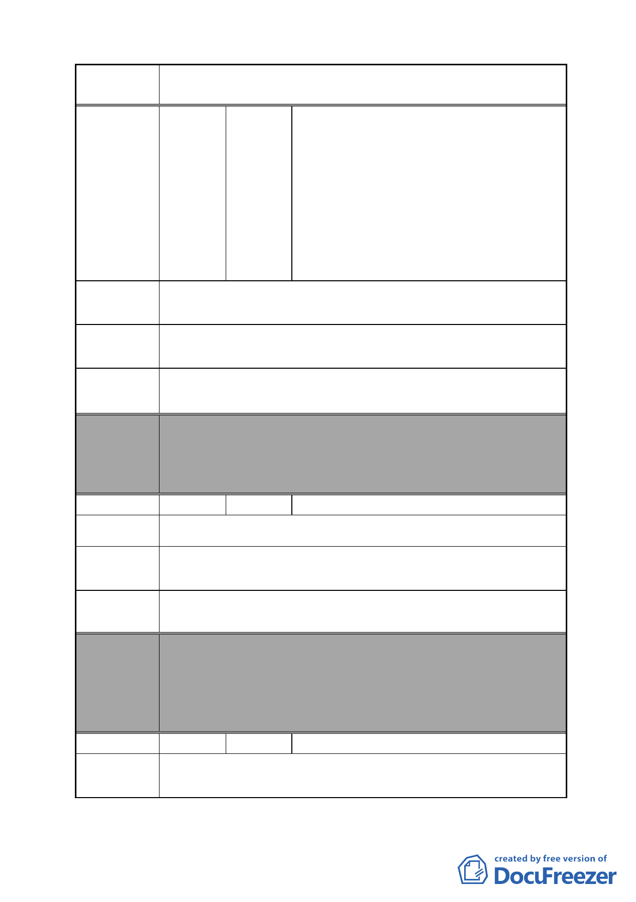

案 名 變更臺北市南港區鐵路地下化沿線土地主要計畫案
陳情地點
雲、沈家治、宋則範、闕山石、鄭朝枝、
葉鑾鶯、葉育哲、鄭子峰、陳子宗、吳張
梅清、陳鴻、闕河文、賴高阿美、尤秋男、
蔡國禎、藝銘實業有限公司廖漢明、賴介
源、曾慶吉、鄭慶福、鄭朱福、陳吳時、
鄭賴芳子、吳兆增、馬漢唐、臺北市政府
函轉吳議員世正協調財團法人臺北市基
督教改革宗長老會南港教會等陳情案結
論、馬業精、吳兆增、戴忠良、林文惠
C 區向陽路側私人土地及建物與南港路 2 段私人土地及建物。
請維護原住戶、地主的權益，政府應保護人民的身家財產權。
陳情理由
請將 C 區中向陽路私人土地及建物與南港路 2 段私人土地及
建議辦法 建物剔除，保持不變。
委員會
決議
編號
陳情地點
本案除文字誤繕應再作修正外，其餘依市府本次會議所送修
正計畫書內容通過。
（依市府本次會議所送修正計畫書，業將陳情地點剔除於市
地重劃範圍）
40 陳情人 黃永存
南港區八德路四段 770-788 之 1 號
陳情理由
建議辦法
委員會
決議
編號
陳情地點
鐵路已地下化，新矽谷科學園區正是車站後面，對南港市容
有絕對影響，但目前還是工三。
希望納入計畫範圍，願配合相關規定，希望改為住商混合區
（新汐谷科學園區 A、B、C 區及全世好工業住宅）。
本案除文字誤繕應再作修正外，其餘依市府本次會議所送修
正計畫書內容通過。
（依市府本次會議說明，因陳情地點使用分區為策略型工業
區，依現行規定即可作廠辦使用，且作策略型產業使用時亦
可有容積獎勵，故不納入本計畫範圍）
41 陳情人 蔡瑤雯
忠孝東路 7 段 577 號
- 46 -